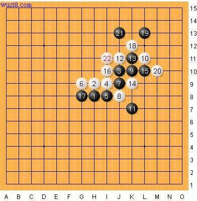
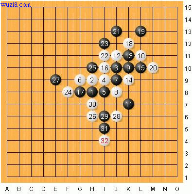
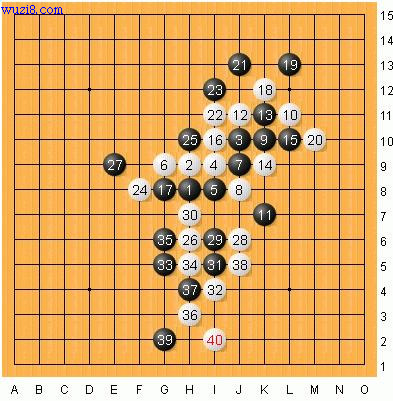
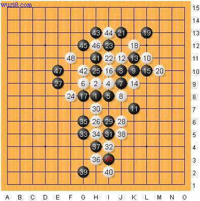
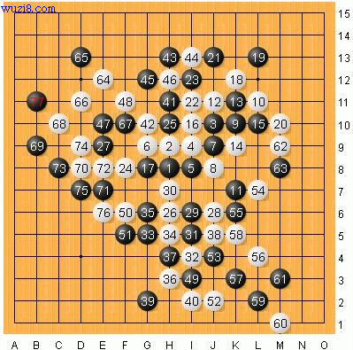
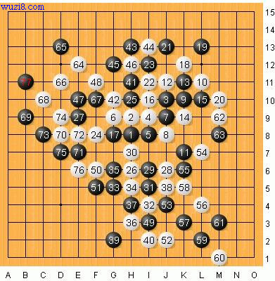
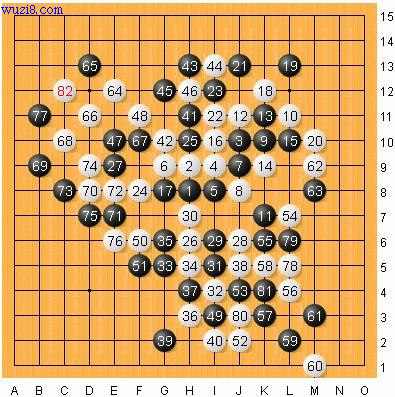

英雄孰与争锋--顾炜VS葛凌峰
#1 英雄孰与争锋--顾炜VS葛凌峰 作者：茗弈小刀 发表时间：2009-9-28 14:56:32
顾炜-- 八段 1996年起接触现代五子棋。1997年起开始从事上海五子棋运动发展工作，主要分管组织策划和内部管理，上海第一代棋手和坚定的推广者上海五子棋委员会主要负责人，这些年对推动上海五子棋发展起了重要作用。相信行云流水在广大五子棋爱好者心里刻下深深的烙印。
顾老师的战绩太多这就不细说了，以下一局是这是顾炜老师（执黑）和葛凌峰老师（执白)的一场比赛对局。我觉得很有价值就收藏起来，在这里与大家一起分享，让我们寻着顾，葛两位老师当时的思路走一下。

疏星开局，11手如下在F9或者H10属于 早川流难局。所谓早川流是早川嘉美喜欢下的变化，早川嘉美是日本连珠社的前任理事长。13手是2002年前后国际EMAIL比赛中发现的变化。此后到21手都是常见。22手变了，我们一般爱下F8,档黑眠三，这里葛老师稍微变了下，先占 I11点，这样如果再档黑眠三白就多了个跳活二，比较主动的一手棋。

果不然23必档属最强走法，白抢夺了先手，接着26以守带攻。26手绝妙的过度手段 葛帅预见到黑上方没有杀 通过做杀把战场引到下盘空间 应该说白稍微主动 不愧是国内顶尖高手。27冷静的防在43点 好棋 28手依然在下方作棋进攻 黑上方虽然有优势 不过如果贸然进攻 那么白将会占据主动 两位棋王级高手都计算到了这一点应该 。黑29手表面极不愿意落一子在26，28之间，其实有2个意图，1是做43 意在防守；其2暗暗和17相连。如果白没注意到，黑左上冲出去白棋就比较危险了。哈哈，眼尖的葛帅当然洞察秋毫。30手毫不犹豫阻断！31手双方都在争取下盘 ，至32 基本定型 白稍微有点外势 不过黑还有上盘的优势 整体依然相当 32手直接卡外面值得讨论 也许葛帅不想刺激黑在上面马上进攻吧 如果32在33位先冲 34手仍可从容占据32这个有利点 顾棋王对点的占据非常敏感 应该在对战中就发现了。

33做棋，占G5这个要点。白果断的断开！黑棋试图在防守中寻生机。36，38白抓住机会猛攻，大有无往不复的霸气 。39档了后白暂时没有什么很强的进攻手段，顾棋王冷静的在下端防御 期待得到反击的机会 盘面比较复杂 对两位高手的计算要求很高 而且实战有时间限制 双方都力求稳妥的招法 40手抓住黑的44禁点做文章 使黑很难应对 如果走了弱手 那么白将迅速获胜 如果换了实力低一些的棋手 也许会认为白已经取胜 顾棋王经过长考 通过上方进攻交换子力 最终化解了白的攻势 确实令观战者叹为观止。

其实狡猾的黑棋早已在不动声色的情况下，在左边为自己奠定了强大的外势。噶噶，葛帅哥，等你攻完就看俺的了！41-47黑毫无障碍顺利进攻。考虑到白右下有棋，49活三，穿一下。鹿死谁手，尚无定论。

41至51手 黑走的准确无误 白也应对很好 我们充分感受到两位高段棋手的算了和风采 全盘的控制和交换 很大程度上抵消了白的优势 不过黑上方的子力也消耗了很多 白52手继续做棋进攻 白棋的目光是锁定在右边，所以52手开始到62手还是在右边寻机会，53手坚实的防守 下到这里 双方大体上依然平衡 白的右盘 黑的左盘 还都各自可战 可见双方的控制力 本来是一盘可守和的棋。54 56可谓全盘的胜负手 对黑又是一次考验 顾57最强应对 43解禁。59 61好次序 此时 白右边的子力所省不多 应该转入防守 黑在防御的同时 左边的材料显得很厚实。63手黑棋狠狠的粉碎了白棋的梦！64无奈的只能转向左边去防守，试图揽局。

64 66 68葛帅通过连续的进攻消耗黑在左上边的优势 70手守中带攻 全盘白走的行云流水 给人赏心悦目的感觉 ，71交换 黑向下面过度 。73手 非常强的一手 可说全盘顾棋王走的草蛇灰线 在不经意之间发动最强烈的进攻 74手成双3 其实是交换防守 ！ 到77手白基本崩溃了，但棋场如战场，不到最后关头决不放弃希望！暗暗为葛帅捏把汗。

78到80交换完毕后 应该说白只要到左下方防御一下 这盘棋就可以和了 可能是长时间的计算加上时间比较紧 82手 全盘葛帅第一个弱手 被黑
#2 Re:英雄孰与争锋--顾炜VS葛凌峰 作者：玉水凌风 发表时间：2009-10-3 16:04:05
 还是理解不了
还是理解不了